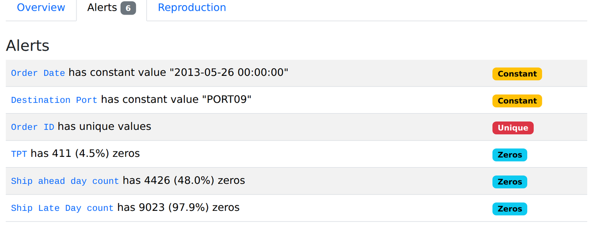
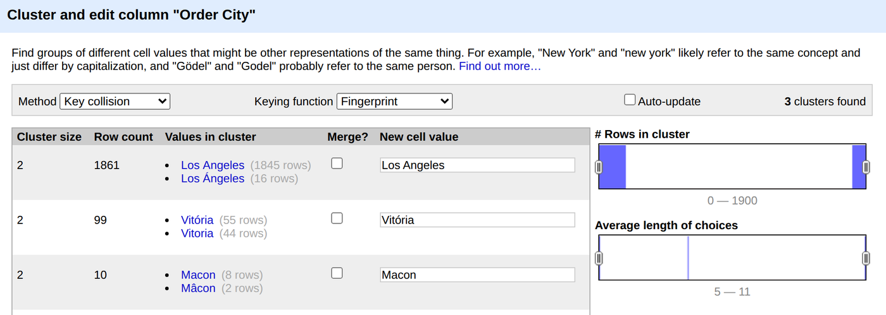

One question no company can answer quickly. Two real datasets that show why. And the project your team will build to answer it.
Rebuilt on 2026-09-24 to the course standard (AGENTS.md 2c): every concept slide leads with a picture, every term is defined where it first appears, every number comes from a real run (demos/session-01-environment-and-constraints/reference-outputs/s1-facts.txt).
A supplier's plant was sanctioned overnight. Which products you shipped last quarter contain a part from it?
| System | Stands for, and what it holds | Supplier is called |
|---|---|---|
| ERP | Enterprise Resource Planning: orders, suppliers, money | vendor_id |
| WMS | Warehouse Management System: goods in and out | supplier_code |
| PLM | Product Lifecycle Management: designs and parts | mfr_ref |
| TMS | Transportation Management System: shipments | party_no |
| CRM | Customer Relationship Management: customers | no supplier at all |
The honest answer: three weeks, four analysts, a spreadsheet nobody can rebuild.
Five minutes. This is the slide the whole course hangs off.
# You type this:
Which finished goods used a part from plant P-114
last quarter, and who did we ship them to?
# Your system writes this, checks it, and repairs it
# if it does not fit your own model:
SELECT ?product ?customer WHERE {
?good ul:hasComponent+ ?part .
?part ul:producedAt ul:plant-P114 .
?ship ul:carries ?good ; ul:consignedTo ?customer .
}Not expected to read this yet. Expected to want to.
A model of what the data means, rules that refuse bad data, a mapping from live tables, a model that predicts the next late shipment, and a stack that starts with one command.
The lectures use one supply chain case. Your team builds the same pipeline on its own topic and its own data. Part 6 today, the team project, explains how.
Two minutes. Do not explain the query. If someone asks about the plus sign after hasComponent: "any depth of sub assembly, the question SQL is worst at." Move on.
By the end of today you have met two real supply chain datasets, measured them, and written down rules they obey that no schema states.
A working environment, a profiling report for both datasets, and a constraint inventory: at least five rules, each with its evidence in the data. Sessions 3, 4 and 5 start from it.
| Part | Minutes |
|---|---|
| 1 · Opening | 10 |
| 2 · The supply chain and the data | 25 |
| 3 · Meaning is not in the schema | 20 |
| 4 · The architecture | 15 |
| 5 · Profiling and hidden rules | 30 |
| 6 · The team project | 15 |
| Lab, then wrap | 65 + 5 |
Two minutes. Read the deliverable aloud. The word that matters is evidence: a rule without a count behind it is an opinion.
Every example for the rest of the course comes from these rows.
Ten seconds. Read the question, let it hang, move on.
Four minutes. Step through slowly; each step names one word the rest of the course uses.
180,519 rows · 53 columns · 65,752 orders · 20,652 customers · 118 products · 1 Jan 2015 to 31 Jan 2018
| Order Id | Order Country | Shipping Mode | Days real | Days scheduled | Delivery Status |
|---|---|---|---|---|---|
| 77202 | Indonesia | Standard Class | 3 | 4 | Advance shipping |
| 75939 | India | Standard Class | 5 | 4 | Late delivery |
| 75938 | India | Standard Class | 4 | 4 | Shipping on time |
Four minutes. Read one row aloud as a sentence: "order 75939, placed on 13 January 2018, shipped Standard Class to Bikaner in India, took 5 days against 4 scheduled, marked late."
65,752 orders fill 180,519 rows. 19,850 orders have one line; the rest have 2 to 5.
Three minutes. This is the first real finding of the day, and it has a cost: anyone who counts rows and calls them orders is wrong by a factor of 2.7.
Source: Kalganova and Dzalbs, Brunel University London, on Figshare, licence CC BY 4.0. Exported from one workbook to seven CSV files by demos/data/fetch_data.py.
Four minutes. Stop on step 4. Three names for one plant, in one file, made by one team. That is the whole course in one step.
| Table | Its first real row |
|---|---|
| OrderList | order 1447296446.7 · 2013-05-26 · PLANT16 · PORT09 · V44_3 · CRF · 808 units · weight 14.3 |
| FreightRates | V444_6 · PORT08 to PORT09 · 250 to 499.99 · DTD · rate 0.7132 · 'AIR ' |
| PlantPorts | PLANT01 ships through PORT01 |
| ProductsPerPlant | PLANT15 makes product 1698815 |
| WhCapacities | PLANT15 · daily capacity 11 |
| WhCosts | PLANT15 · cost per unit 1.4151 |
| VmiCustomers | PLANT02 · customer V5555555555555_16 |
Look again: an order number with a decimal point, a mode with three trailing spaces, codes that mean nothing outside this file.
Three minutes. Let them spot the oddities before you build the callout. Somebody usually sees the decimal in the order number first.
| DataCo | Brunel | |
|---|---|---|
| Time | 1 Jan 2015 to 31 Jan 2018 | One day: 26 May 2013 |
| One row is | An order line | An order |
| An order is called | Order Id 75939 | Order ID 1447296446.7 |
| A place is | A city and a country, in Spanish: Estados Unidos | A code: PORT09 |
| Shipping is | A class: Standard Class | A carrier code: V444_0 |
Both correct, no shared key. This course writes down what names mean, so a machine can connect them.
Three minutes. The point is not that the data is bad. Each dataset is fine. They simply never agreed on names, which is the everyday state of enterprise data.
A manager reads "180,519 rows" in DataCo and reports "180,519 orders last quarter". What is the real number of orders in the file?
Find the grain before you count anything. It is the first line of every profiling report you will write.
Forty seconds, show of hands, then reveal. Distractor a is the one that ships to management every day.
Meaning is written down nowhere a program can reach it. Our own data shows it leaving.
Ten seconds. Read the question, let it hang, move on.
Late_delivery_risk INTEGER -- 1 means the line WAS late
Customer Country TEXT -- 'EE. UU.' is Spanish for USA
Order Zipcode NUMBER -- 155,679 of 180,519 missing
Product Status INTEGER -- always 0, carries nothingIn heads, in a stale wiki, in the WHERE clauses of old reports. Nowhere a program can read.
Schema: the declared shape of data: tables, columns, types, keys. How it looks, not what it means.
Semantic layer: a machine readable description of what the data means, above the systems that store it.
Five minutes. Read the four comments at the bottom of the code aloud, slowly. Every one is a real fact about a real column.
Late_delivery_risk is the best one: its name says "risk", yet it equals 1 on exactly the 98,977 lines marked late. The name lies and the schema cannot tell you.| Customer Country · 2 values | Lines |
|---|---|
| EE. UU. | 111,146 |
| Puerto Rico | 69,373 |
| Order Country · 164 values | Lines |
|---|---|
| Estados Unidos | 24,840 |
| Francia | 13,222 |
| México | 13,172 |
| 161 more countries | 129,285 |
EE. UU. in one column and Estados Unidos in the next. A JOIN on country finds no match.Integration rarely fails because data is dirty. It fails because two correct descriptions of the world meet, and nobody wrote down how they differ.
Four minutes. Build the second table only after they have read the first and think "customer country" answers "where do we sell".
Five minutes. This is the most important slide of Part 3: a real disagreement, in real data, with no error anywhere.
Each row is one definition. The glossary link on any later slide takes you back here.
If a new team member must ask a person what a column means, the meaning is in a head, not in a semantic layer.
Three minutes. Read from the bottom up: what we have (schema), what we want (semantic layer), and the two tools that build it (ontology, knowledge graph).
Two systems store suppliers as vendor_id and supplier_code. An engineer joins them and 80 percent of rows match. What has been established?
Separate what the data shows from what you decided it means. Remember the 4,423 canceled lines: correct rows, different meaning.
Forty seconds, show of hands, then reveal. Spend the time on d: it is a good engineer's instinct, and it wastes a quarter.
Each session adds one stage. By Session 8 the whole system starts with one command.
Ten seconds. Read the question, let it hang, move on.
Seven minutes, the spine of the course. One step per session so they can count weeks against the picture.
| Stage | Tool we use |
|---|---|
| Profiling · today | ydata-profiling, OpenRefine |
| Graph · Session 2 | Apache Jena Fuseki |
| Ontology · Session 3 | Protégé |
| Shapes · Session 4 | pySHACL |
| Mapping · Session 5 | Morph-KGC, Ontop |
| Learning · Session 6 | PyTorch Geometric |
DGL: no commits in 2026, last package release May 2024. Tutorials still recommend it.
Check the last release and whether it still installs. A confident README is not evidence.
Three minutes. One line per tool; each gets its own slide in the session that uses it.
A recall makes this a legal deadline.
Parts of parts, to any depth.
Session 6. And which "late"?
More than no answer. Session 7.
Three minutes. Build the cards one at a time. Card 03 links back to the two meanings of late: the business question cannot even be asked until the word is defined.
Guess, measure, then try to break your guess. Every example here comes from our two datasets.
Ten seconds. Read the question, let it hang, move on.
Three minutes. The loop is the lab. Everything in the next nine slides is one turn of it on real data.
Real links, 7 of 19 plants shown. Rings: the many side and the two way side.
Cardinality (of a column): how many different values it holds. Order Date: 1. Order ID: 9,215.
One to many: one thing links to several on the other side. Seven plants share PORT04.
| PlantPorts | Real count |
|---|---|
| Plants · ports | 19 · 11 |
| Possible pairs | 209 |
| Pairs that exist | 22 |
Three minutes. Two kinds of cardinality: a column's number of distinct values, and a link's number of partners on each side.
| DataCo column | Empty cells out of 180,519 |
|---|---|
| Product Description | 180,519 |
| Order Zipcode | 155,679 |
| Customer Lname | 8 |
| Customer Zipcode | 3 |
No zip code stored, so the order has no zip code. Missing means false.
No zip code stored, so we do not know it. Missing means unknown.
Null: an empty cell.
Closed world: missing means false, as in SQL.
Open world: missing means unknown. Session 3.
Three minutes. A whole column that is always empty is not a quality problem, it is a column nobody uses. Zip code missing for 86 percent is different: someone needs it and it is not there.
| DataCo · Shipping Mode | Order lines |
|---|---|
| Standard Class | 107,752 |
| Second Class | 35,216 |
| First Class | 27,814 |
| Same Day | 9,737 |
Distribution: how often each value, or range of values, appears in a column.
| Brunel · OrderList | What the counts show |
|---|---|
| Order Date | 1 distinct value: 2013-05-26 |
| Destination Port | 1 distinct value: PORT09 |
| Ship Late Day count | 9,023 zeros |
| Ship ahead day count | 4,426 zeros |
Three minutes. The Brunel side is the finding: every order is on one day, to one port. Brunel is a snapshot, not a history, so it cannot teach "late over time". Know that before Session 6 asks you to predict.
Four minutes. Step 3 is the payoff: a broken reference turned into a rule. The counts match exactly: 854 V44_3 orders, 854 CRF orders, the same 854.

Two minutes. The concepts came first; this is only where to click. The Alerts tab is the fastest way in.
Three minutes. Everyone expects step 4 to be a merge. It is not. This is the whole lesson of clustering: a cluster is a question, not an answer.

| Cluster | Really |
|---|---|
| Los Angeles · Los Ángeles | California · Chile |
| Vitória · Vitoria | Brazil · Spain |
| Macon · Mâcon | Georgia, US · France |
All three clusters are different cities. The Merge box stays empty.
Two minutes. Only the path to the dialog is new; the idea was the last slide. If a student merges, their DataCo loses a Chilean city and 16 orders move to California.
| Rule, one sentence | Evidence in the data | Source columns |
|---|---|---|
| A plant ships only through a port it is linked to. | 22 of 209 possible pairs exist. All 9,215 orders leave through a linked port: 0 exceptions. | OrderList: Plant Code, Origin Port · PlantPorts |
| An order with service level CRF uses carrier V44_3, which has no freight rate. | 854 CRF orders, 854 V44_3 orders, the same rows. V44_3 is absent from FreightRates. | OrderList: Service Level, Carrier · FreightRates: Carrier |
Three minutes. Read row 1 across: rule, evidence, source. Where it goes next: Session 3 turns rules into meaning, Session 4 into checks, Session 5 into mapping decisions. That is the standard for the lab. constraint_inventory_template.csv has the same three columns.
Three minutes. The contrast with the plant and port rule is the lesson: one rule holds on 9,215 of 9,215 rows, this one fails on 1,370 of 8,361. Both go in the inventory, with their counts.
Teams of 2 or 3. Your own topic and database. The same pipeline you see in the lectures. Team and topic locked before Session 2.
Ten seconds. Read the question, let it hang, move on.
After each lab, repeat it on your own data. The milestones are feedback; the final system is graded once.
Four minutes. The message: every lab is a rehearsal on the shared case, and the real work is repeating it on your own topic.
| Topic area | Example open databases | Vocabulary to reuse |
|---|---|---|
| Transit and mobility | GTFS feeds from one transit agency | Linked GTFS |
| Bibliographic | OpenAlex, CrossRef | SemOpenAlex, BIBFRAME |
| Cultural heritage, music | MusicBrainz, Europeana | Music Ontology, EDM |
| Public procurement | OCDS releases from one government | OCDS ontology |
| Food products | Open Food Facts, USDA FoodData Central | FoodOn |
Any open database with a real vocabulary to reuse and unwritten rules to find. You check and report every licence.
Three minutes. Do not let them choose in the room; they need to look at the data first. The two tests are what matter: a vocabulary to reuse, and hidden rules to find.
The project is graded as a team; the defense is yours alone, and any of you can be asked about any part.
Three minutes. Say the deadline twice. Ask them to post team and topic where you collect them (your usual channel).
| Course grade | Percent | When |
|---|---|---|
| Attendance and lab run | 15 | Sessions 1 to 7 |
| Team project: system and report | 55 | 48 hours before Session 8 |
| Individual defense | 30 | Session 8 |
| Team project, one mark per layer | Points |
|---|---|
| Ontology | 10 |
| Shapes and validation | 10 |
| Mapping and integration | 9 |
| Learning over the graph | 9 |
| Access layer | 9 |
| Report and open problem | 8 |
Three minutes. Each layer gets one mark: works (full points), partly (half), missing (none), judged from a clean checkout of the team's repository. The milestones at the end of Sessions 4 and 6 are feedback, not grades. The defense is individual: 2 or 3 questions each in Session 8, one overall mark from 0 to 3.
Setup check, profiling, clustering in OpenRefine, then your constraint inventory. Each student on their own machine.
Ten seconds, then the brief. The lab clock starts on the next slide.
python smoke_test.py: checks Python 3.12, JDK 21, Docker, Protégé.python data/fetch_data.py, from the demos folder.python profiling.py, or cell by cell in Jupyter.constraint_inventory_template.csv: rule, evidence, source.Smoke test passing, both profiling reports, and your inventory with evidence for every rule. Committed to your repository.
Rules the schema does not already state, each with a count, and exceptions written down rather than dropped.
Three minutes to brief, then stop talking and walk the room.
demos/session-01-environment-and-constraints/. Its README has the same steps.Put the method in the order you actually work in.
Plant and port: 0 exceptions in 9,215 orders, the rule holds. Rate bands: 1,370 of 8,361 in a gap, the rate table is incomplete.
Two minutes, run as a pause once everyone has a profiling report open. Let them argue whether profiling comes before reading the names. It comes after: a guess first, then the numbers.
Smoke test passes. Data fetched. Brunel profiles written.
DataCo profile read. Order City clustered and every cluster checked.
Five rules or more, each with evidence and source. Committed.
Start from a slide of Part 5: every measure there is one query in pandas. Your job is to find rules those slides did not show.
Sixty minutes. Circulate. At minute 35, check that nobody has merged an OpenRefine cluster. At minute 50, warn that commits are due.
A recall went to 400,000 customers because the one plant at fault could not be traced.
Integration. The parts list lived in one system and was never linked to shipments.
A dashboard said 12 percent of shipments were late. Operations said 30. Both computed correctly.
The ontology, by its absence. Two meanings of "late", like our 98,977 and 103,400.
An assistant answered fluently about a supplier removed eight months before.
The question layer. It could not say "stale" or "I do not know". Session 7 grades that.
Then, as a room: compare inventories and count the rules only one person found. That number is the argument for writing meaning down.
Four minutes. The cases are teaching composites, not named companies. Take each as a show of hands before the reveal.
One minute, or skip in class: it is for revision. Every term here is also clickable on the slides, and in GLOSSARY.md.
Integration does not fail because data is dirty. It fails because two correct descriptions of the world met and nobody wrote down how they differed.
Form your team and choose your topic. Read Hogan et al., Chapters 1 and 2 (free at kgbook.org), and Sequeda and Lassila, Chapter 1.
Turn today's rows into a graph, give every thing a global name, and ask questions that follow links.
Two minutes. End on the statement, not the admin.
Press S for study mode: every definition shows inline, every reveal opens, every diagram shows its last step. Press S again to go back.
O contents · / search · ? all shortcuts. Answers are stored in this browser only.
Close here so students know where the self study tools are.